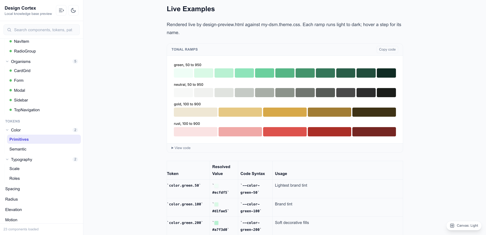
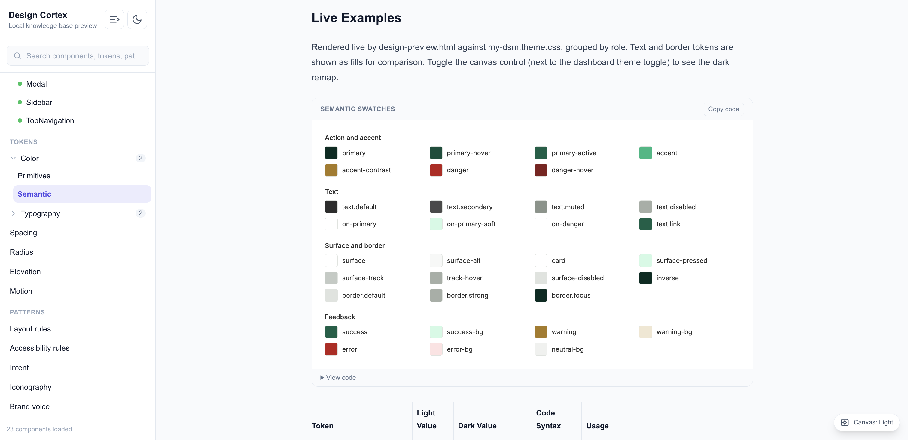
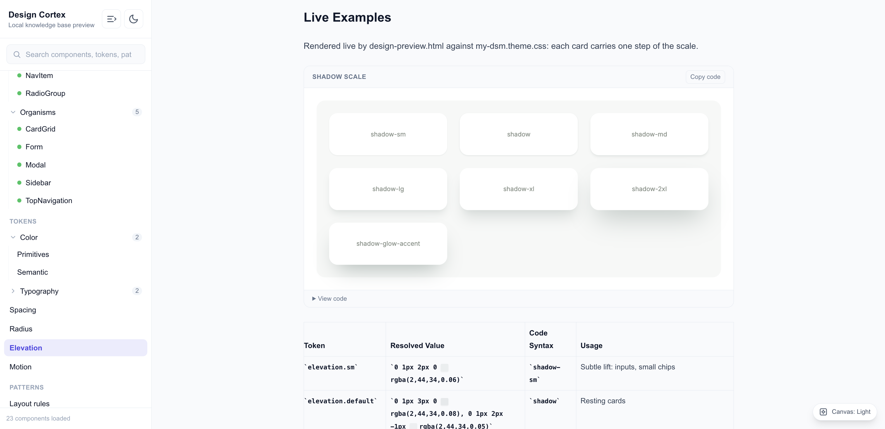
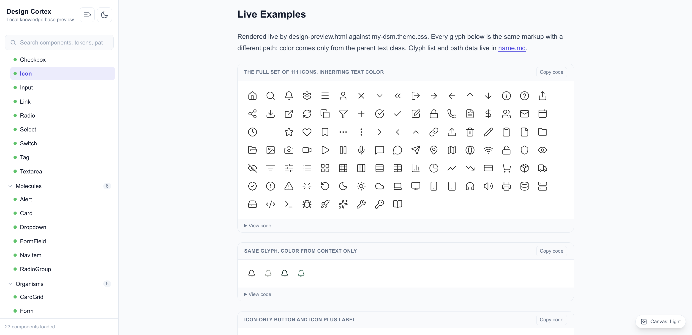
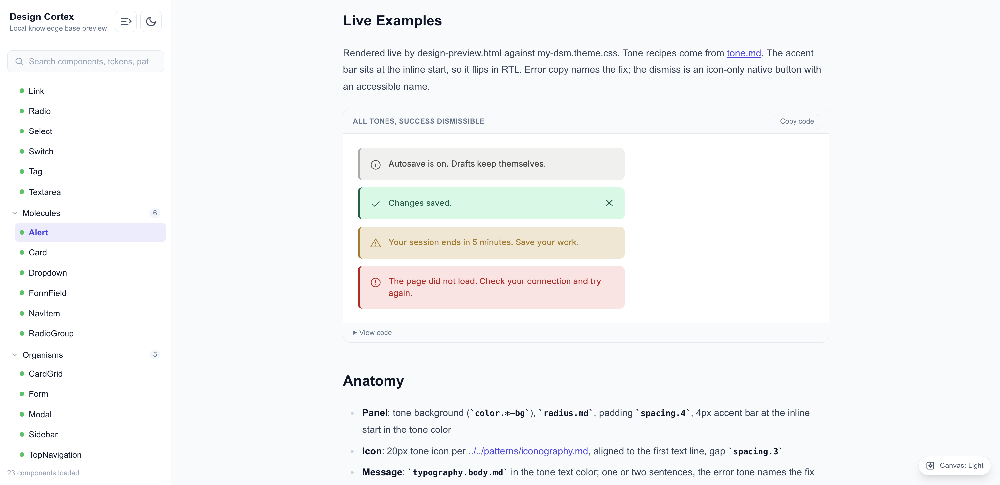
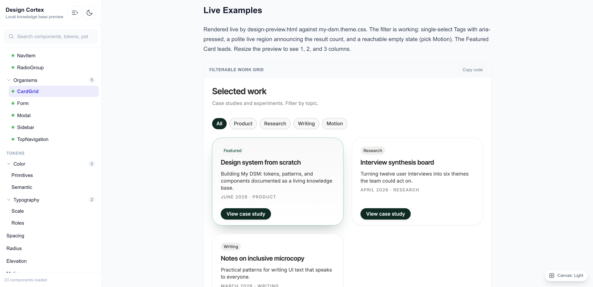

2026 · 3 days
Role
Personal project
Scope
Design Tokens, Component Architecture, Documentation, Accessibility, Iconography, Theming
My DSM is a design system built from its tokens up, every piece documented to the same pattern and mirrored in Figma as it was made. It is the foundation this whole site sits on, and this page is the clearest place to see it working.
Four business lines at the bank ran on one design system I had built for other people's products. Nothing I owned worked that way. The push to fix that came from somewhere else entirely.
AI-native, not AI-curious, is my own phrase for it, and a manager only earns it hands-on. I could point a team at the tools and read what came back, but I had never carried a build from an empty file to something finished.
Years of unifying design languages across separate business lines, every one of them owned by the bank. A system carries the decisions of whoever built it, and none of those decisions had ever been mine to make.
Design Cortex, a documentation structure someone else had built and published, was the starting point. A blank file would have made the first day about scaffolding, when the part I wanted to learn was everything after it.
Three days, and the order was the whole discipline. Every layer had to be finished and documented before the one above it existed, which is slow on the first pass and the only reason the system holds together now.
Primitives first, then semantic color, type, spacing and motion. Everything above binds to that layer by name, so a component never carries a raw value and changing a decision later means changing it in one place instead of forty.
Live examples, anatomy, variants, accessibility notes, and when not to reach for it, on every single piece. It reads like a living Storybook rather than a static file, because a system people have to interpret is one they quietly stop using.
Pushed group by group into Figma through Claude Code over a live MCP connection. Design and code drift apart the moment they are maintained separately, so the wiring is not a convenience, it is what prevents a second source of truth.

Color primitives
Semantic color
Elevation
Icons
Alert
Card gridBuilding a system and living inside one are different jobs, and the second is where a system either holds or quietly falls apart. This site is where mine got its first real use.
This site runs on a full copy of the DSM, not on the DSM itself. Color, type and button style were redefined inside that copy, so a decision made for one project can never quietly become a decision for every future one.
Cursor opens the live documentation as a local server and does nothing else. Claude Code is what actually builds. Giving each tool one job is what stops a workflow from turning into two half-workflows that disagree.
The type you are reading, the green on this page and every button on this site come from that copy. A design system that cannot survive its author's own portfolio was never going to survive a product team.
For years I specified systems for other people to trust without ever living inside one from the first token to the last component. Doing it end to end taught me nothing new about how it should be done. It taught me what that order costs on the night you would rather skip it.
The AI took the hours and gave back none of the judgment. What should exist, what it binds to, what it must never do, none of that got faster. A system built in three days only stands because its rules were settled before the speed started.